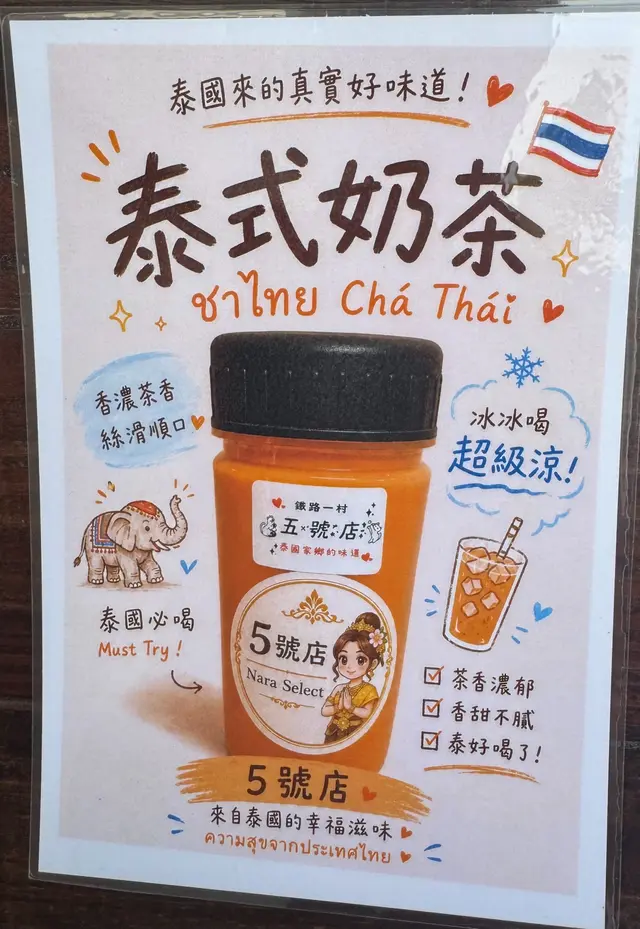
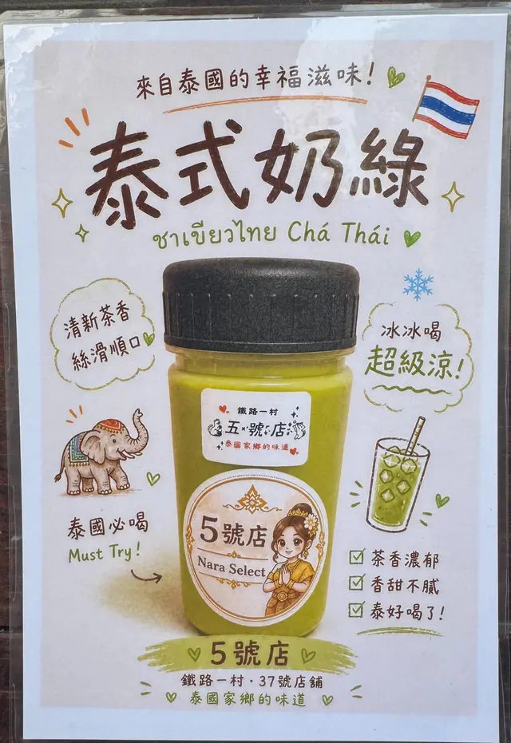

THAI TASTE
今天，想吃點泰國味。

泰式奶綠
熟悉的泰國風味，逛園區時帶上一杯剛剛好。
🥭
泰式甜點
泰式水果涼糕、芒果果凍與芒果椰奶果凍等店內甜點。
🥗
青木瓜絲
清爽酸香，可選辣或不辣。實際供應依當日店內為準。
NARA SELECT
從泰國，挑一些喜歡的回來。
泰國選物
包包、零錢包、大象小物與生活風格選品，不定期更換。
公仔・盲盒
店內不定期出現各種公仔、掛飾與盲盒，適合慢慢挖寶。
到店才有的驚喜
我們不想把網站做成塞滿商品的商城。真正好玩的，留給你到店發現。
MIAOLI RAILWAY MUSEUM
第一次來苗栗火車頭園區？
5號店就在苗栗火車頭園區的鐵路一村。這裡保留鐵道元素與展示車輛，適合親子、鐵道迷與來苗栗散步的旅人。
🚂 看火車
園區有多輛展示車輛，也有遊園小火車等體驗項目。
🐱 臺鐵喵務處
採現場預約、分時段入場；實際開放狀況請依園區當日公告。
🚉 從後站進來
園區入口位於苗栗火車站後站一側，逛到鐵路一村時，就來找5號店。
※ 園區票價、設施與開放時間可能調整，行前請以苗栗火車頭園區最新公告為準。
FIND US
來園區，找到5號店。
5號店 Nara Select
苗栗火車頭園區・鐵路一村 5號店
搭火車來很方便：從苗栗火車站往後站方向，進入園區後前往鐵路一村。
園區本身沒有附設停車場；後站周邊有收費停車場與路邊收費停車格，前站亦有收費停車場。
WALKING GUIDE
從苗栗火車站走到5號店
苗栗火車站下車後，先找「出口」方向
往後站出口（英才路）不要往前站走，往後站出口「英才路」方向前進
走後站二樓左側空橋沿著空橋，往螺旋塔方向前進
往鐵路一村走跟著「火車頭一村」的指標前進
抵達5號店找到鐵路一村37號，就是 Nara Select
還是不確定？直接點上方「Google Maps 導航」。